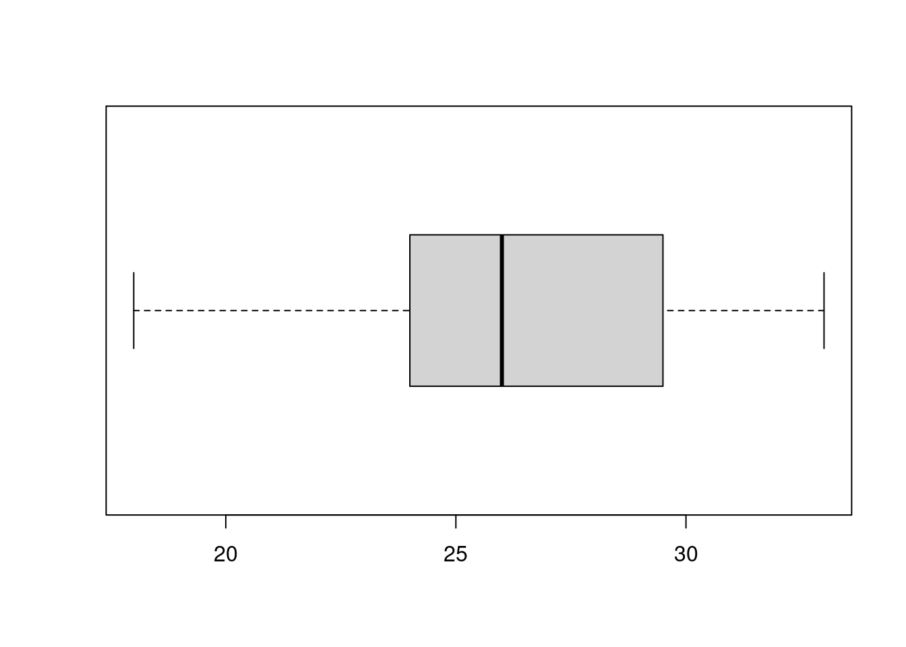
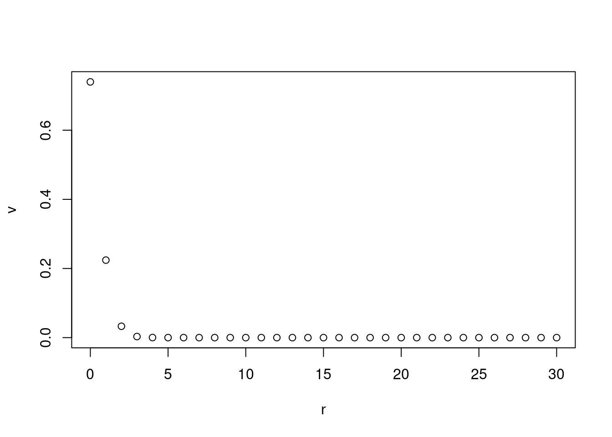
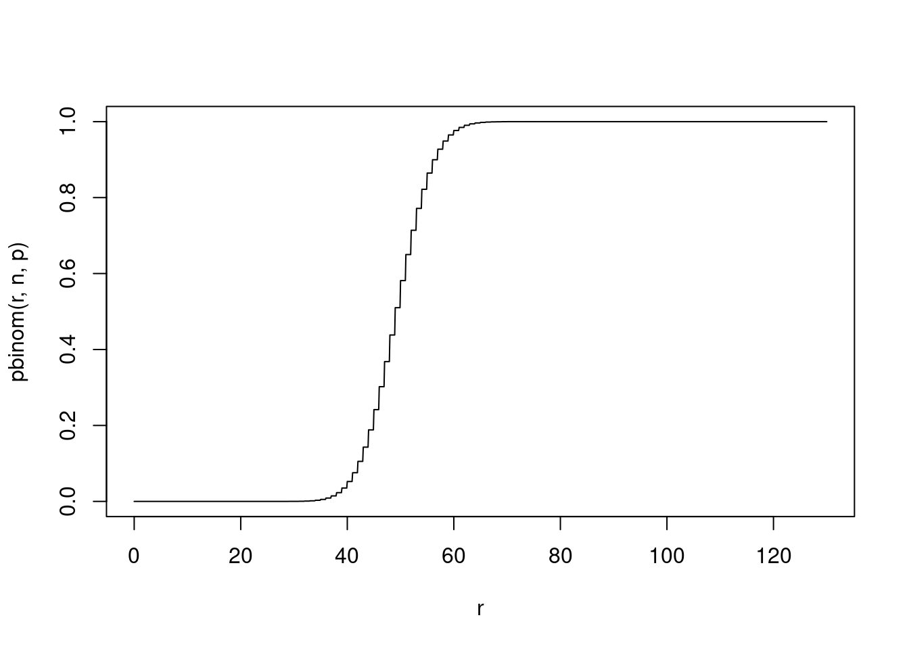

3 Discrete Probability
A motivating problem: Current estimates are that 38% of college and university students report food insecurity (defined as being uncertain they will have enough food for the next month or not knowing when they will next eat). The mathematics major at UNC has 130 students enrolled, how likely is it that 39 or fewer of the students enrolled are food insecure?
3.1 Definitions
To get started we will set up some definitions we will use:
An experiment is the process by which an observation is made. In our motivating problem the experiment would be inquiring of the mathematics majors whether they are food insecure or not.
Experiments on Human Subjects like this one are subject to additional constraints and reviews in order to protect the subjects (subjects need to be protected from harm, their identities need to be protected, and their rights to consent to be included in a study need to be protected). So in this case the actual experiment we do would involve informing the subject of possible harm, taking steps to see that their response is anonymous, and asking them to verify that they are consenting to participate.
The sample space associated with an experiment is the set of all possible observations. In our motivating example the sample space would be a list of which students are facing food insecurity and which are not.
An event is a set of possible observations from the sample space.
3.1.1 Random Variable
For example we are interested, rather than in which students are food insecure, how many students are food insecure. This number: \(Y\) the number of mathematics majors at UNC that are food insecure is called a random variable of interest in our problem. Specifying a value or range of values for \(Y\) corresponds to an event and identifies a subset of the sample space.
Ther eare actually other random variables associated with the same problem that we might be concerned about, but this one is a sort of basic one.
3.2 Probability
The probability of an event is the likliehood of that observation occuring from the sample space. What do we mean by likliehood though? We will think of the probability of an even occuring as the proportion of the times it will occur through repetition of the experiment. In some case like rolling dice, flipping coins, or measuring the distance a spring has stretched under a weight it is clear what we mean by repeated observation. However things get a little unclear when we are talking about a situation like our motivating problem.
What we mean is: If we were to take groups of 130 students randomly selected from all students throughout the US and ask how many of them are food insecure, how often would we get the particular value of \(Y\).
Some basic Theorems about Probability from these definitions:
Total Probability: The total probability, i.e. the probability that something from the sample space happens must be 1,
Valid Probaiblities: no probability can have a value bigger than 1 or less than 0.
Complement Probability: If the probability of event A is \(P(A)\) then the probability of the complement of event A (all of the members of the sample space that are not in A) is \(P( \neg A) = 1 - P(A)\).
Mutually Exclusive Events: Two events are said to be mutually exclusive if their intersection (the cases where both events happen) is impossible i.e. \(P(A\cap B) = 0\). Note this does not necessarily mean that the intersection is empty.
Sum of Mutually Exclusive Events: The probability of one of two or both mutually exclusive events happening is the sum of the probabilities of the two events: \(P(A \cup B) = P(A) + P(B)\).
Sum of Events: More generally we have the probability of one of two or both events happening is almost coming from the sum, however we must take into account the possiblity of them both happening is being counted in both \(P(A)\) and \(P(B)\): \[P(A\cup B) = P(A) + P(B) - P(A\cap B) \]
Venn Diagrams: These results should look familiar, they mirror statements about the size of sets A and B, and their union and intersection; with the caveat that P(S) = 0 is not exactly the same as S being empty.
3.2.1 Two Events Happening at Once
In this case we will state that two events are inedpendent if the probability that they both happen is the product of the probabilities of either one of them happening:
\[ P(A \cap B) = P(A) P(B)\]
An example of two independent events would be flipping two coins: getting a heads on one coin flip and getting a heads on the second coin flip. The result of the second flip will not depend upon the result of the first flip (or maybe the right question is, when would the second flip depend on the first one?).
An example of two dependent events would be getting a head on the first coin flip of two, and then the flipping of two heads in a row in two coin flips. Note that in order to have two heads the first flip needs to be a head and thus the second event depends on whether the first event has happened or not. It is the dependence causing the probability of one event to change if we know the other event has occured that we are looking for.
We will return to the case of dependent events later.
3.2.2 Permutations and Choices
To continue with our example we need a couple of constructions from combinatorics:
A permutation of \(n\) objects is a specific ordering of the objects. For example { “pie”, “bread”, “vegetable”} and {“vegetable”, “pie”, “bread”} are two different permutations of the same 3 objects.
The total number of permutations of \(n\) objects is given by: \[ n! = n (n-1) (n-2) \cdots 3 \cdot 2 \cdot 1 \]
Verify this.
3.2.2.1 Example: Find all 3! permutations of {“pie”, “bread”, “vegetable”}
3.2.2.2 Example: Find all 4! permutations of {1, 2, 3, 4}
3.2.2.3 Generalization: Find all the possible permutations of {1, 1, 2, 3}
I.e. when two of the elements are identical and so can’t be distinguished.
3.2.2.4 Choices
However what we often want to do is ask a question like: In how many ways can we choose 3 cookies from a plate of 5 cookies?
In math-ese this is asking: how many subsets of size 3 are there from a set of size 5?
3.2.2.5 Suppose order matters - how many ways with ordering matter can we choose 3 numbers from the set {1, 2, 3, 4, 5}
3.2.2.7 Example: How many ways can we choose 3 objects from a set of 10?
3.3 Bernouli Trials
In a Bernouli Trial there is a simple experiment with a sample space consisting of two outcomes {Success, Failure}. Or any other size two descriptors you prefer (Heads / Tails if we are flipping a coin; Red/Black if we are playing roullete; Win/Lose if we are hockey team; etc. ). The probability of Success is given by p and the probability of failure is given by 1-p.
Flipping a fair coin we expected to get a HEADS half of all flips. Note This is a statement about long term behavior. For example it means if we flip the coin one thousand times we would expect to have close to 500 HEADS.
A common misconception: If we flip a coin twice we expect to see two HEADS sometimes.
A common misconception: If we flip a coin two hundred times, we expect to see sequences of just heads. Let’s try it!
The sample command in R produces a sample from a given column. By defining a column to be {“H”, “T”} we can then simulate flipping a coin (much faster than actually flipping the coin) by using sample. Sample takes a parameter replace that identifies whether we are returning members to the set after selecting them. Because we are simulating flipping a coin repeatedly we want to replace the value after each selection.
x <- c("H", "T")
result <- sample(x, 200, replace=TRUE)
result## [1] "T" "T" "H" "T" "T" "H" "H" "T" "T" "T" "H" "H" "H" "T" "T" "T" "T" "T"
## [19] "T" "T" "H" "T" "T" "H" "T" "T" "H" "T" "T" "H" "T" "T" "T" "T" "H" "H"
## [37] "T" "H" "H" "H" "H" "T" "T" "T" "H" "H" "H" "H" "T" "T" "T" "T" "T" "T"
## [55] "H" "H" "T" "T" "T" "T" "H" "T" "T" "T" "T" "T" "H" "T" "H" "T" "H" "H"
## [73] "H" "H" "H" "H" "H" "H" "H" "H" "H" "T" "T" "T" "T" "T" "T" "T" "H" "H"
## [91] "T" "H" "T" "T" "T" "T" "T" "T" "H" "T" "T" "H" "T" "H" "T" "T" "T" "T"
## [109] "T" "H" "T" "H" "H" "H" "H" "T" "H" "H" "H" "H" "T" "H" "H" "T" "H" "T"
## [127] "T" "H" "H" "H" "T" "T" "H" "H" "H" "T" "H" "H" "H" "T" "H" "H" "T" "H"
## [145] "H" "H" "T" "T" "T" "T" "T" "H" "H" "T" "T" "T" "T" "T" "T" "H" "H" "T"
## [163] "H" "H" "T" "T" "H" "H" "H" "T" "H" "H" "T" "T" "T" "T" "H" "H" "T" "T"
## [181] "H" "H" "H" "H" "T" "H" "T" "H" "T" "H" "H" "T" "H" "H" "T" "T" "H" "T"
## [199] "H" "H"You can also pass the sample command a list of probabilities for each element of x; note that order matters so check it. For a fair coin the default of each outcome being equally likely works. However note that unfair coins are not unheard of - you can purchase them at magic and toy shops.
A typical human trying to fake coin flips will distribute them too uniformly and will not have as many long sequences of “H” as we expect to see from an actual experiment.
3.4 Binomial Trials
We now have all the tools for the question at hand. Let’s start with simulating the question using sample. Randomly selecting an individual student from the population of US college students and asking whether they are food insecure or not is a Bernouli trial with a probably of 0.38 that the student is Food Insecure; and a probability of \(1-0.38 = 0.62\) that they are not. Specifically the result for each student is independent of the others (the probabilities 0.38 and 0.62 in the trial are not changing). We will use the prob parameter and pass it a column of the two probabilities.
x <- c(1, 0)
result <- sample(x, 130, replace = TRUE, prob=c(0.38, 0.62) )
result## [1] 0 1 0 1 1 1 0 1 1 0 1 0 0 1 0 0 0 0 0 0 0 0 0 1 0 1 0 1 0 0 0 0 0 1 0 0 1
## [38] 0 1 0 1 0 0 1 1 0 1 0 0 0 1 1 0 0 0 0 1 0 0 0 0 1 0 0 1 1 0 1 0 1 0 0 1 1
## [75] 1 1 0 0 0 0 1 0 0 0 1 0 0 0 0 1 0 1 0 0 0 1 0 0 0 0 0 0 0 1 1 0 1 0 0 0 0
## [112] 1 1 0 0 0 0 1 1 1 1 1 1 1 0 1 0 0 0 1You may notice that rather than using strings for the entries in x I used 1 and 0. The reason is that what we care about is the number of students that are food insecure, this is our random variable of interest and now we can compute its value by just summing up the numbers in result the value of which will be the number of 1s.
sum(result)## [1] 49Because the sample command uses (pseudo)-random numbers, if we run this again we will get a different result (also note each time I compile this textbook the values change). Do it a few times yourself and see what we get.
sum(sample(x, 130, replace=TRUE, prob=c(0.38, 0.62)))## [1] 42This is a little bit tedious to run a bunch of times and we also should be keeping track of the results. For example, what is the smallest value you have seen so far? Luckily, one of the things computers are absolutely brilliant at is doing the same thing over and over and keeping track of the results. Let me introduce you to one of the two real programming structures we will use in this class: a for loop. A for loop tells the computer to complete the same set of commands multiple times.
# We are going to keep track of the results in a variable called trials, so we first initalize this variable as an empty column
trials <- c()
# Then our for loop - in this case we just want the loop to repeat the command 100 times
for (k in 1:100) {
# each loop will compute the number of food insecure students in our random sample of 130 students,
# make that a column, and
# then add that to the end of the trials column
trials <- c(trials, sum(sample(x, 130, replace=TRUE, prob=c(0.38, 0.62))))
}
trials## [1] 50 54 38 58 48 44 44 51 49 35 50 54 53 41 42 58 49 45 44 51 63 51 48 40 52
## [26] 49 46 50 47 49 56 47 49 49 50 51 54 53 42 46 56 49 38 61 46 50 42 51 48 41
## [51] 40 49 38 47 53 41 43 58 57 42 48 38 53 48 47 51 52 38 50 48 56 53 61 50 61
## [76] 41 43 43 43 50 53 48 49 39 50 42 49 48 47 51 57 50 51 52 47 47 56 42 49 49Let’s use a historgram to look at the result:
# The paramter breaks is determining how many bins to use
hist(trials, breaks=10)
summary(trials)## Min. 1st Qu. Median Mean 3rd Qu. Max.
## 35.00 44.00 49.00 48.50 51.25 63.00So interestingly the minimum value is not very small. What does this tell us about the number of mathematics majors we might see that are food insecure? What would our interpretation be if we found only 10 of the mathematics majors were food insecure?
Finally you can probably tell me you are not surprised that the mean is close to
0.38 * 130## [1] 49.4we will make your instinct about this precise!
3.4.1 Plan
Let me pause here and say that this is our plan for the course. We will take a given problem and experiment with it, using R to simmulate things like flipping coins or rolling dice, or as in this example selecting random college students and asking them whether they are food insecure or not. Then we will ask the theoretical questions where we try and model the situation.
3.4.2 Binomial Distribution
Now let’s develop a model of what is happening. To do this we will ask the following question: For Y, the random variable given by the number of success in a set of 130 Bernouli trials, what is \(P(Y = r)\) for a given integer r? We could think of this as a function of \(r\) and as such it is called the Probability Distribution of the random variable \(Y\). In this case the \(Y\) takes discrete values and so we would call \(P(Y=r)\) a discrete probability distribution.
Find the following probabilities:
- \(P(Y=r)\) for r < 0
- \(P(Y=r)\) for r not an integer
- \(P(Y=r)\) for r > 130
Okay so now lets fix a particular r, and being mathematicians lets start simple with r = 1:
- \(P(Y=1)\) is the probability that one of the 130 students is food insecure. There 130 different students who could be the one that is food insecure; and then the probability of having one success is given by 0.38; while the probability of 129 failures is \(0.62^{129}\). Thus the solution is:
\[ P(Y=1) = 130 \cdot 0.38 \cdot 0.62^{129} \]
- Specifically the 130 factor is because mutually exclusive events sum their probabilities; and luckily for us each one is equally likely so we just get the multiple of the number of events.
- The $0.38 ^{129} $ factor is because independent events multiply their probabilities.
Note that this depends on the individual trials being independent. For the food insecurity quesiton, is this reasonable?
We get:
130 * 0.38 * 0.62^129## [1] 8.170618e-26- \(P(Y=2)\) in the case of two students out of the 130 being food insecure: There are $ $ ways to select those two students. Then the likelihood that those two are success is \(0.38^2\); and the likliehood the other 128 are failures is \(0.62^{128}\). Putting it all together we have:
\[ P(Y=2) = \binom{130}{2} 0.38^2 \cdot 0.62^{128} \]
We get:
choose(130, 2) * 0.38^2 * 0.62^128## [1] 3.23003e-24- More generally we find:
\[ P(Y=r) = \binom{130}{r} 0.38^r \cdot 0.62^{130 - r} \]
Plotting the whole range of values:
r <- c(0:130)
v <- choose(130, r) * 0.38^r * 0.62^(130 - r)
plot(r, v)
3.4.3 Binomial Distribution
More generally: A Binomial Trial is made up of n identical indepedent Bernouli Trials each with probability p of success and 1-p of failure. The random variable $Y = $ has a probability distribution function given by:
\[ P(Y = r) = \binom{n}{r} p^r (1-p)^{n-r} \]
Vary the p and the n a bit in the plot below and see how the distribution changes:
p <- 0.01
n <- 30
r <- c(0:n)
v <- choose(n, r) * p^r * (1-p)^(n - r)
plot(r, v)
3.4.4 Checking a few things
- So a few things to check before we move on. The total probability should be 1. It’s not clear it will be:
sum(v)## [1] 1It is interesting to ask why it works this way. You might recall that you have seen the binomial coefficient before, and in fact it even gets its name from the following problem:
\[ (a + b)^n = \sum_{r=0}^n \binom{n}{r} a^r b^{n-r} \]
Now suppose \(a=p\) and \(b=1-p\); what do we learn?
- No probability should have a value less than 0; or greater than 1.
3.5 Cummulative Distributions
The motivating problem question was: How likely is it that out of the 130 mathematics majors 39 or fewer of them are food insecure. In terms of probability this quesiton is asking: \(P(Y \leq 39)\)
And note we can compute that by just taking a sum:
\[ P(Y \leq 39) = \sum_{r=0}^{39} P(Y = r) = \sum_{r=0}^{39} \binom{130}{r} 0.38^r \cdot 0.62^{130-r} \]
We could derive a formula for expressions right this, and if you enjoy algebra it is not a bad exercise. Do you enjoy algebra? I frankly do not. Using a computer we can just compute it:
r <- c(0:39)
sum( choose(130, r) * 0.38^r * 0.62^(130 - r) )## [1] 0.03528625This is a good place to introduce some hard coded functions for our first named distribution:
The Probability Distribution Function for the Binomial Distribution is given by the dbinom(r, n, p) command:
dbinom(39, 130, 0.38)## [1] 0.01228386The Cummulative Distribution Function for the Binomial Distribution is given by the pbinom(r, n, p) command:
pbinom(39, 130, 0.38)## [1] 0.03528625This us of d and p together with the name of the distribution will continue through all the distributions we work with.
3.5.1 Conclusion to the Motivating Question
So at this point we can conclude our motivating question: What we have learned is that in a randomly selected group of 130 US college students the probability that we would have 39 or fewer of them indicating they are food insecure is less than 5%. We actually have the exact value or can at least get very good approximations of it. However in our class, and particularly in Applied Statistics, we are actually not that concerned with the exact value. We are more interested in bounding the result above and below. In fact in applications in the real world, if your answer depends on the exact value coming from your model it should set off alarm bells.
In this case again we are seeing that the likliehood of 39 or fewer students with food insecurity out of 130 randomly selected US college students is small. If we had observed 39 we would then be inclined to believe that the other possibility is occurring: Our assumption is false. Meaning in this case Mathematics Majors at UNC are not a random sample of US college students - there are lots of reasons, once we have evidence of it, we might realize are contributing to them not being random (the primary one being that there is in fact a stark difference between the food insecurity of 2-year students and 4-year students). The other possibility is that one of the other assumptions is false - perhaps the students are not well represented as independent trials.
3.5.2 General Cummulative Distribution Functions
Its worth spending some more time on cummulative distribution functions, lets look at them in general case of a Binomial Trial with n trials with a probability of success of each trial of p.
n <- 130
p <- 0.38
r <- c(0:(10*n))/10
plot(r, pbinom(r, n, p), type="l")
Note: We only plotted the distribution function at integer values of r because it is zero everywhere else. However the cumulative distribution function gives the probability that \(Y \leq r\) and so it has a step like behavior.
Note: I generally LOVE using software to draw plots as I am an awful artist - most of my low grades in math classes like trigonometry and geometry in high school were because of my drawings. However one place where software consistently messes us up is in drawing step functions - this picture would be better without the vertical lines connecting the horizontal segments.
Vary p and n to see how the plot changes. In particular for small values of n the steps should become more prominent. You might have to increase the 10 in the code snippet to get the mesh to be finer - if you notice the vertical segments are not looking very vertical this is what should be changed.